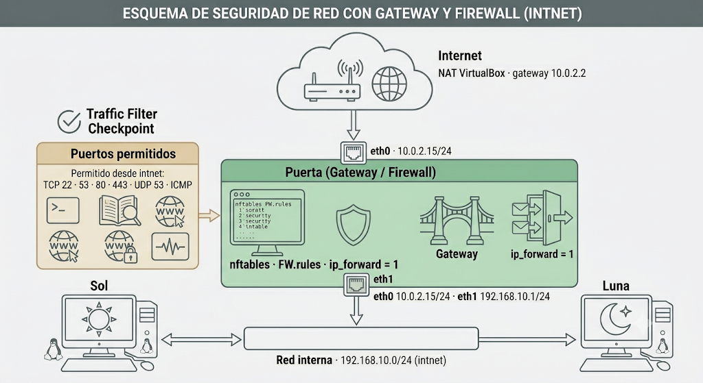
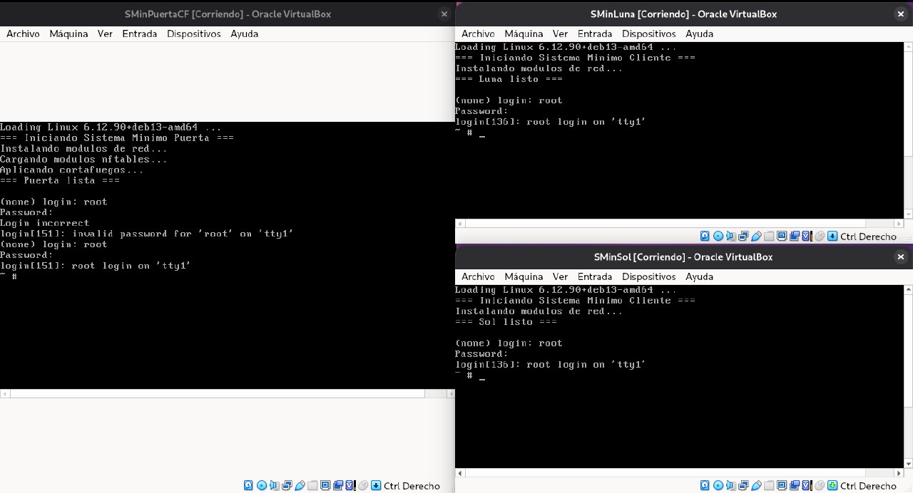
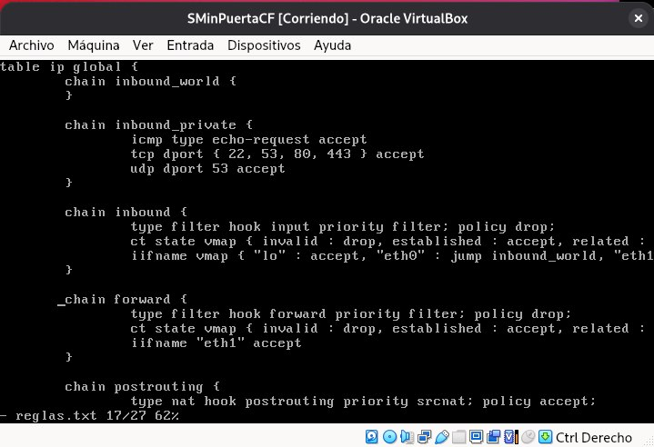
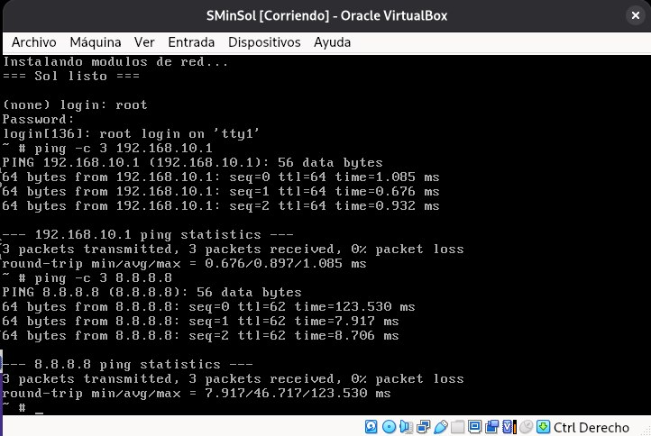
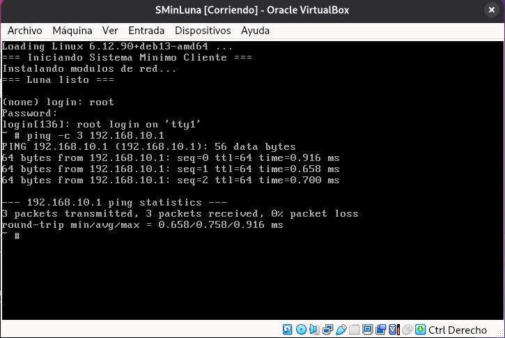
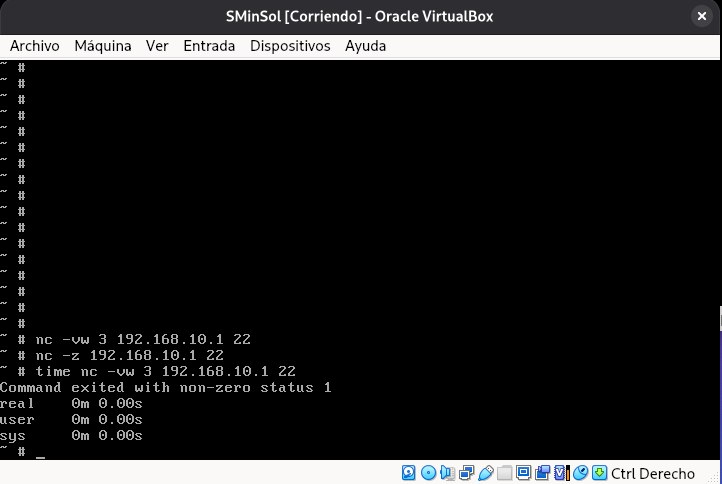
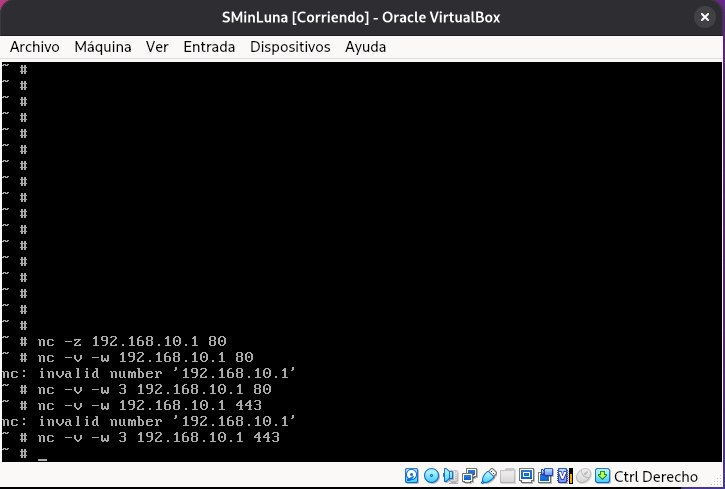
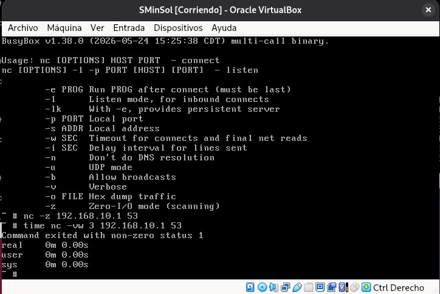
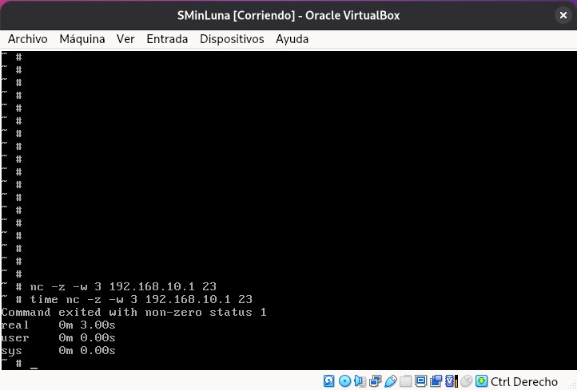
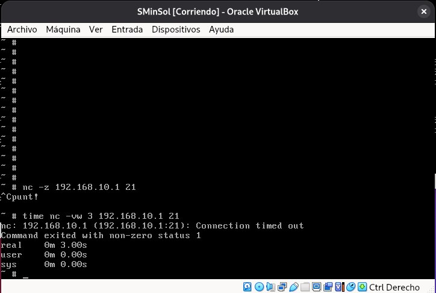

Esta tarea extiende los sistemas mínimos construidos en la Tarea 2 añadiendo un cortafuegos basado en nftables. El objetivo es comprender cómo se implementa el filtrado de paquetes en Linux a nivel de kernel, sin apoyarse en herramientas de configuración automática ni en distribuciones preconfiguradas.
La topología consiste en tres máquinas virtuales: una Puerta que actúa como gateway NAT y firewall, y dos máquinas clientes en la red interna denominadas Sol y Luna. Las reglas del cortafuegos, definidas en FW.rules, permiten únicamente los servicios SSH (22), HTTP (80), HTTPS (443) y DNS (53) desde la red interna hacia la Puerta. Todo el tráfico restante es descartado por política de denegación por defecto (policy drop).
| Parámetro | Valor |
|---|---|
| Sistema operativo anfitrión | Debian 13 (Trixie) — arquitectura x86_64 |
| Versión del kernel | 6.12.90+deb13-amd64 |
| Ruta de trabajo | /home/moises-sanchez/Documentos/Seguridad_2 |
| Herramienta de virtualización | Oracle VirtualBox |
| Userspace | BusyBox v1.38.0 (dinámico) |
| Motor de cortafuegos | nftables v1.0.x — módulo kernel nf_tables.ko |
| Archivo de reglas | FW.rules — tabla ip global, cuatro cadenas |
La red se compone de tres máquinas virtuales. La Puerta tiene dos interfaces: eth0 conectada a Internet mediante NAT de VirtualBox, y eth1 conectada a la red interna privada intnet. Sol y Luna tienen únicamente eth0 en la red interna y usan la Puerta como gateway y como servidor DNS.

| Máquina | Interfaz | Dirección IP | Función |
|---|---|---|---|
| Puerta | eth0 | 10.0.2.15/24 | NAT — salida a Internet vía VirtualBox |
| Puerta | eth1 | 192.168.10.1/24 | Gateway + firewall de la red interna |
| Sol | eth0 | 192.168.10.2/24 | Cliente interno — red interna únicamente |
| Luna | eth0 | 192.168.10.3/24 | Cliente interno — red interna únicamente |
El sistema mínimo construido en la Tarea 2 no incluye ninguna herramienta de filtrado de paquetes. Para integrar nftables es necesario copiar manualmente cuatro tipos de componentes desde el sistema anfitrión: el binario nft, las librerías dinámicas de las que depende, los módulos del kernel (.ko) y el archivo /etc/services que permite a nft resolver nombres de servicio como ssh o https.
Primero se instala nftables en el sistema Debian 13 anfitrión para disponer del binario y las librerías:
sudo apt update
sudo apt install -y nftables
# Confirmar instalación
which nft # /sbin/nft
nft --version
# Ver todas las librerías que necesita el binario
ldd /sbin/nftLa integración se divide en cinco pasos que deben ejecutarse como root desde el directorio ~/Documentos/Seguridad_2. Cada paso transfiere un tipo distinto de componente al sistema mínimo de la Puerta.
Paso 1 — Binario nft. Se copia el ejecutable nft desde /sbin/ del anfitrión al directorio sbin/ del sistema mínimo y se le otorgan permisos de ejecución. Este binario es la única interfaz de usuario para configurar y consultar el cortafuegos.
cp /sbin/nft SMinPuerta/sbin/nft
chmod +x SMinPuerta/sbin/nftPaso 2 — Librerías dinámicas. El binario nft está enlazado dinámicamente y requiere diez librerías que no están presentes en el sistema mínimo. Todas se copian al directorio lib/x86_64-linux-gnu/ del sistema mínimo, que es la ruta que el cargador dinámico busca en tiempo de ejecución.
cp /lib/x86_64-linux-gnu/libnftables.so.1 SMinPuerta/lib/x86_64-linux-gnu/
cp /lib/x86_64-linux-gnu/libnftnl.so.11 SMinPuerta/lib/x86_64-linux-gnu/
cp /lib/x86_64-linux-gnu/libmnl.so.0 SMinPuerta/lib/x86_64-linux-gnu/
cp /lib/x86_64-linux-gnu/libjansson.so.4 SMinPuerta/lib/x86_64-linux-gnu/
cp /lib/x86_64-linux-gnu/libgmp.so.10 SMinPuerta/lib/x86_64-linux-gnu/
cp /lib/x86_64-linux-gnu/libedit.so.2 SMinPuerta/lib/x86_64-linux-gnu/
cp /lib/x86_64-linux-gnu/libbsd.so.0 SMinPuerta/lib/x86_64-linux-gnu/
cp /lib/x86_64-linux-gnu/libmd.so.0 SMinPuerta/lib/x86_64-linux-gnu/
cp /lib/x86_64-linux-gnu/libtinfo.so.6 SMinPuerta/lib/x86_64-linux-gnu/
cp /lib/x86_64-linux-gnu/libxtables.so.12 SMinPuerta/lib/x86_64-linux-gnu/Paso 3 — Módulos del kernel. nftables necesita once módulos cargados en el kernel. En el anfitrión Debian estos archivos están comprimidos con .xz, por lo que primero se copian y luego se descomprimen con unxz en el directorio de módulos del sistema mínimo. El orden de copia respeta la cadena de dependencias: crc32c_generic antes que libcrc32c, y todos los módulos base antes que nf_tables.
cd SMinPuerta/lib/modules/6.12.90+deb13-amd64
cp /lib/modules/6.12.90+deb13-amd64/kernel/crypto/crc32c_generic.ko.xz . && unxz -f crc32c_generic.ko.xz
cp /lib/modules/6.12.90+deb13-amd64/kernel/lib/libcrc32c.ko.xz . && unxz -f libcrc32c.ko.xz
cp /lib/modules/6.12.90+deb13-amd64/kernel/net/netfilter/nfnetlink.ko.xz . && unxz -f nfnetlink.ko.xz
cp /lib/modules/6.12.90+deb13-amd64/kernel/net/ipv4/netfilter/nf_defrag_ipv4.ko.xz . && unxz -f nf_defrag_ipv4.ko.xz
cp /lib/modules/6.12.90+deb13-amd64/kernel/net/ipv6/netfilter/nf_defrag_ipv6.ko.xz . && unxz -f nf_defrag_ipv6.ko.xz
cp /lib/modules/6.12.90+deb13-amd64/kernel/net/netfilter/nf_conntrack.ko.xz . && unxz -f nf_conntrack.ko.xz
cp /lib/modules/6.12.90+deb13-amd64/kernel/net/netfilter/nf_nat.ko.xz . && unxz -f nf_nat.ko.xz
cp /lib/modules/6.12.90+deb13-amd64/kernel/net/netfilter/nf_tables.ko.xz . && unxz -f nf_tables.ko.xz
cp /lib/modules/6.12.90+deb13-amd64/kernel/net/netfilter/nft_ct.ko.xz . && unxz -f nft_ct.ko.xz
cp /lib/modules/6.12.90+deb13-amd64/kernel/net/netfilter/nft_chain_nat.ko.xz . && unxz -f nft_chain_nat.ko.xz
cp /lib/modules/6.12.90+deb13-amd64/kernel/net/netfilter/nft_masq.ko.xz . && unxz -f nft_masq.ko.xz
cd ~/Documentos/Seguridad_2Paso 4 — Archivo /etc/services. nftables resuelve nombres de servicio como ssh, http o domain consultando este archivo en tiempo de ejecución. Sin él, el comando nft -f /etc/FW.rules falla al arrancar con el error "No such file or directory" al intentar parsear los nombres de puerto.
cp /etc/services SMinPuerta/etc/servicesPaso 5 — Archivo de reglas. Se copia el archivo FW.rules al directorio /etc/ del sistema mínimo. El rc.sh de la Puerta lo leerá durante el arranque mediante nft -f /etc/FW.rules para instalar todas las cadenas y reglas del cortafuegos.
cp FW.rules SMinPuerta/etc/FW.rulesEl comando ldd /sbin/nft revela que el binario nft requiere diez librerías adicionales a las ya presentes en el sistema mínimo de la Tarea 2. Cada una cumple una función específica:
| Librería | Función |
|---|---|
libnftables.so.1 | Librería principal de nftables — parsing de reglas y comunicación con el kernel. |
libnftnl.so.11 | Abstracción de alto nivel sobre los mensajes netlink de nf_tables. |
libmnl.so.0 | Minimalist Netlink Library — comunicación de bajo nivel con el kernel. |
libjansson.so.4 | Biblioteca JSON — permite exportar e importar reglas en formato JSON. |
libgmp.so.10 | GNU Multiple Precision — manejo de grandes números en direcciones IPv6 y conjuntos. |
libedit.so.2 | Edición de línea interactiva — historial en modo interactivo de nft. |
libbsd.so.0 | Funciones BSD — dependencia de libedit. |
libmd.so.0 | Funciones de digest — dependencia de libbsd. |
libtinfo.so.6 | Información de terminal — dependencia de libedit. |
libxtables.so.12 | Compatibilidad con xtables (iptables legacy) — requerida por nft_compat. |
El archivo /etc/services mapea nombres de servicio a números de puerto. nftables lo necesita para interpretar nombres como ssh, domain, http o https en las reglas. Sin este archivo, nft -f /etc/FW.rules falla con el error "Could not process rule: No such file or directory".
cp /etc/services SMinPuerta/etc/servicesEl archivo FW.rules define una tabla ip global con cuatro cadenas. La estrategia es de lista blanca: todo el tráfico es descartado por defecto (policy drop) salvo el que coincide explícitamente con las reglas de aceptación.
flush ruleset
define DEV_PRIVATE = eth1 # red interna · 192.168.10.1
define DEV_WORLD = eth0 # NAT VirtualBox · 10.0.2.15
define NET_PRIVATE = 192.168.10.0/24
table ip global {
# Tráfico permitido desde Internet (actualmente ninguno)
chain inbound_world { }
# Tráfico permitido desde la red interna hacia la Puerta
chain inbound_private {
icmp type echo-request accept
tcp dport { ssh, domain, http, https } accept
udp dport { domain } accept
}
# Cadena principal — hook input (paquetes destinados a la Puerta)
chain inbound {
type filter hook input priority 0; policy drop;
ct state vmap { established : accept, related : accept, invalid : drop }
iifname vmap { lo : accept, $DEV_WORLD : jump inbound_world,
$DEV_PRIVATE : jump inbound_private }
}
# Cadena de tránsito — hook forward (paquetes que pasan por la Puerta)
chain forward {
type filter hook forward priority 0; policy drop;
ct state vmap { established : accept, related : accept, invalid : drop }
iifname $DEV_PRIVATE accept # la red interna puede salir a Internet
}
# NAT masquerade — cambia la IP origen de los paquetes salientes
chain postrouting {
type nat hook postrouting priority 100; policy accept;
ip saddr $NET_PRIVATE oifname $DEV_WORLD masquerade
}
}El rc.sh de la Puerta se actualiza para cargar los módulos de nftables en el orden correcto y aplicar las reglas al final del arranque:
#!/bin/sh
echo "=== Iniciando Sistema Minimo Puerta ==="
export LD_LIBRARY_PATH=/lib/x86_64-linux-gnu:/lib
mount -t proc none /proc
mount -t sysfs none /sys
mount -t devtmpfs none /dev
echo "Instalando modulos de red..."
cd /lib/modules/6.12.90+deb13-amd64/
insmod failover.ko
insmod net_failover.ko
insmod virtio_net.ko
echo 1 > /proc/sys/net/ipv4/ip_forward
ip link set lo up
ip link set eth0 up
ip addr add 10.0.2.15/24 dev eth0
ip route add default via 10.0.2.2
ip link set eth1 up
ip addr add 192.168.10.1/24 dev eth1
echo "Cargando modulos nftables..."
insmod /lib/modules/6.12.90+deb13-amd64/crc32c_generic.ko
insmod /lib/modules/6.12.90+deb13-amd64/libcrc32c.ko
insmod /lib/modules/6.12.90+deb13-amd64/nfnetlink.ko
insmod /lib/modules/6.12.90+deb13-amd64/nf_defrag_ipv4.ko
insmod /lib/modules/6.12.90+deb13-amd64/nf_defrag_ipv6.ko
insmod /lib/modules/6.12.90+deb13-amd64/nf_conntrack.ko
insmod /lib/modules/6.12.90+deb13-amd64/nf_nat.ko
insmod /lib/modules/6.12.90+deb13-amd64/nf_tables.ko
insmod /lib/modules/6.12.90+deb13-amd64/nft_ct.ko
insmod /lib/modules/6.12.90+deb13-amd64/nft_chain_nat.ko
insmod /lib/modules/6.12.90+deb13-amd64/nft_masq.ko
echo "Aplicando cortafuegos..."
nft -f /etc/FW.rules
echo "=== Puerta lista ==="Sol y Luna son los dos clientes de la red interna. Sus sistemas mínimos no ejecutan nftables; únicamente configuran su interfaz de red y apuntan a la Puerta como gateway y servidor DNS. Para poder usar el comando nc (netcat) en las pruebas de conectividad, se agrega el symlink correspondiente en bin/, dado que BusyBox lo incluye como applet pero no tenía el enlace creado:
# Agregar symlink de nc en Sol y Luna
cd ~/Documentos/Seguridad_2/SMinSol/bin && ln -s busybox nc
cd ~/Documentos/Seguridad_2/SMinLuna/bin && ln -s busybox nc
# Regenerar ambos ISOs
cd ~/Documentos/Seguridad_2
bash haceSol.sh
bash haceLuna.shEl rc.sh de Sol asigna la IP 192.168.10.2/24 y el de Luna la IP 192.168.10.3/24, con gateway y DNS en 192.168.10.1 (la Puerta) en ambos casos.
Se crean tres máquinas virtuales en VirtualBox. Es imprescindible que las tres compartan exactamente el mismo nombre de red interna (intnet), ya que VirtualBox distingue entre nombres de forma sensible a mayúsculas.
| VM | ISO | Adaptador 1 | Adaptador 2 | RAM |
|---|---|---|---|---|
| Puerta | ImagenPuerta.iso | NAT · virtio-net | Red interna intnet · virtio-net | 128 MB |
| Sol | ImagenSol.iso | Red interna intnet · virtio-net | — | 128 MB |
| Luna | ImagenLuna.iso | Red interna intnet · virtio-net | — | 128 MB |

Las tres VMs arrancadas: Puerta (con cortafuegos activo), Sol y Luna.
Tras arrancar la Puerta, se verifica que las reglas de nftables se cargaron correctamente con el comando nft list ruleset:

La Puerta muestra las cuatro cadenas de FW.rules activas: inbound_world, inbound_private, inbound, forward y postrouting.
Se comprueba también la conectividad básica con ping desde Sol y Luna hacia la Puerta y hacia Internet:

Sol alcanza la Puerta (192.168.10.1) e Internet (8.8.8.8) — ICMP permitido y NAT funcionando.

Luna alcanza igualmente la Puerta con 0% de pérdida de paquetes.
Desde Sol y Luna se comprueba que los cuatro servicios habilitados en inbound_private son accesibles. Se usa nc (netcat de BusyBox) para intentar abrir una conexión TCP hacia cada puerto. Una respuesta inmediata de tipo connection refused confirma que el paquete atravesó el cortafuegos (no hay servicio escuchando en la Puerta, pero el firewall lo dejó pasar).

Puerto 22 (SSH) — el cortafuegos permite el acceso desde la red interna.

Puertos 80 (HTTP) y 443 (HTTPS) — permitidos desde la red interna.

Puerto 53 (DNS) — permitido tanto por TCP como por UDP (udp dport { domain } accept).
Se verifica que los servicios no incluidos en la lista blanca de inbound_private son descartados por la política policy drop. A diferencia de los puertos permitidos (respuesta inmediata), los bloqueados producen un timeout de varios segundos, evidencia clara del filtrado.

Puerto 23 (Telnet) — timeout de 3 segundos, descartado por policy drop.

Puerto 21 (FTP) — bloqueado por el cortafuegos.
La siguiente tabla resume los resultados de todas las pruebas realizadas desde Sol y Luna:
| Servicio | Puerto | Protocolo | Comando de prueba | Resultado esperado | Regla aplicada |
|---|---|---|---|---|---|
| ICMP (ping) | — | ICMP | ping -c 3 192.168.10.1 |
✓ Permitido | icmp type echo-request accept |
| SSH | 22 | TCP | nc -z 192.168.10.1 22 |
✓ Permitido | tcp dport { ssh } accept |
| DNS | 53 | TCP/UDP | nc -z 192.168.10.1 53 |
✓ Permitido | tcp/udp dport { domain } accept |
| HTTP | 80 | TCP | nc -z 192.168.10.1 80 |
✓ Permitido | tcp dport { http } accept |
| HTTPS | 443 | TCP | nc -z 192.168.10.1 443 |
✓ Permitido | tcp dport { https } accept |
| Telnet | 23 | TCP | nc -z -w 3 192.168.10.1 23 |
✗ Bloqueado (drop) | policy drop en chain inbound |
| FTP | 21 | TCP | nc -z -w 3 192.168.10.1 21 |
✗ Bloqueado (drop) | policy drop en chain inbound |
| SMTP | 25 | TCP | nc -z -w 3 192.168.10.1 25 |
✗ Bloqueado (drop) | policy drop en chain inbound |
| HTTP alternativo | 8080 | TCP | nc -z -w 3 192.168.10.1 8080 |
✗ Bloqueado (drop) | policy drop en chain inbound |
| MySQL | 3306 | TCP | nc -z -w 3 192.168.10.1 3306 |
✗ Bloqueado (drop) | policy drop en chain inbound |
Cuando un puerto está permitido por el firewall pero no hay ningún servicio escuchando en él, el sistema operativo responde con TCP RST (connection refused) de forma inmediata. Esto confirma que el paquete llegó a la Puerta y fue procesado. Cuando un puerto está bloqueado por policy drop, el paquete es descartado silenciosamente y la conexión queda en espera hasta el timeout configurado con -w. Esta diferencia de tiempo es la evidencia observable del filtrado.
Los archivos de configuración utilizados en esta tarea están disponibles para descarga. Corresponden exactamente al contenido mostrado en las secciones anteriores.